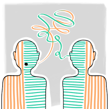

Can an LLM Understand Cultural Code-Switching?
Background
Code-switching is one of the most natural and invisible things humans do. We change how we speak depending on who we are talking to, where we are, and what version of ourselves feels safest or most appropriate in that moment. For many people, especially those who move between cultures, languages, or social classes, code-switching is not optional. It is survival, politeness, strategy, and self-protection all at once.
Growing up Indian-American, I learned very early that the way I spoke at home was not the way I spoke at school. At home, language carried respect, hierarchy, and indirectness. At school, language rewarded confidence, clarity, and directness. Neither mode was fake, but they were different. Over time, switching between them became automatic.
Code-switching is not just about language. It is about tone, vocabulary, humor, posture, and emotional expression. Because it is so context-dependent, I wanted to test whether an LLM could actually recognize when code-switching is happening, and whether it understands why people do it.
Setup
I used Gemini 2.5 Flash and tested its understanding of code-switching through a series of prompts. The goal was not to ask for a definition, but to see how the model interprets behavior across contexts.
I tested three scenarios:
- Linguistic code-switching across social settings
- Cultural code-switching across family and professional spaces
- Intentional suppression of identity markers
Each prompt was run independently.
Prompt 1
“A person speaks very formally and politely at work but uses slang and casual language with friends. What is happening?”
Result
Gemini identified this as adapting communication style to context. It described the behavior as social awareness and professionalism. It framed the shift as appropriate and strategic, emphasizing that people adjust language to fit social norms.
This was a correct but surface-level answer. The model recognized that switching happens, but not the emotional or cultural reasons behind it.
Prompt 2
“A student from an immigrant household speaks differently at home than at school and avoids discussing certain cultural topics in academic spaces. How should this be understood?”
Result
This response was more detailed. Gemini described the behavior as cultural adaptation and boundary management. It acknowledged that individuals from multicultural backgrounds may alter their communication to avoid misunderstanding or bias.
However, it framed the behavior primarily as choice and adjustment. It did not fully engage with the pressure or risk involved in not code-switching.
The language was descriptive, not empathetic.
Prompt 3
“An employee intentionally tones down their accent and avoids cultural references in meetings to appear more professional. Why might someone do this?”
Result
Gemini explained that people may suppress aspects of their identity to conform to dominant norms, reduce bias, or avoid negative judgments. It acknowledged workplace power dynamics and the desire for acceptance.
This was the strongest response. The model recognized that code-switching can be protective rather than expressive. It came close to naming the emotional labor involved, though it still framed the behavior as rational rather than burdensome.
Analysis
Gemini consistently recognizes code-switching as a functional behavior. It understands that people change how they speak based on context and audience. Where it struggles is in understanding the cost of that switching.
What Gemini Understands
Contextual adaptation
It correctly identifies that people adjust language to fit social environments.Social norms
It understands that workplaces, families, and peer groups have different expectations.Strategic motivation
It recognizes that code-switching can reduce bias or misunderstanding.
What Gemini Underestimates
Emotional exhaustion
Switching constantly is tiring. Gemini does not frame code-switching as draining.Risk
Failing to code-switch can lead to exclusion, judgment, or real consequences. This risk is understated.Loss of authenticity
The model does not grapple with the internal tension of suppressing parts of oneself.Structural pressure
It frames code-switching as individual choice rather than a response to unequal systems.
This pattern mirrors how code-switching is often discussed in academic or professional writing. It is analyzed, but not felt.
Why This Gap Exists
LLMs are trained on explanations of behavior, not on lived experience. Code-switching is often written about analytically rather than emotionally. As a result, models learn to describe it without fully understanding its weight.
Additionally, many texts normalize code-switching as a skill. While this is not wrong, it can obscure the fact that the skill is demanded unevenly. Some people are allowed to speak naturally everywhere. Others are not.
Gemini absorbs this imbalance but does not critique it.
Cultural Implications
As LLMs are used more in education and professional advising, their understanding of code-switching matters. If an AI frames code-switching as neutral adaptation, it may unintentionally reinforce the idea that the burden lies with individuals rather than systems.
This is especially relevant for students, immigrants, and minorities who already navigate multiple identities. Advice that ignores the emotional cost of code-switching can feel dismissive, even when it is accurate.
Takeaways
Gemini understands what code-switching looks like, but not what it feels like. It recognizes the behavior without fully recognizing the pressure behind it.
This does not make the model incorrect. It makes it incomplete.
Code-switching is not just a communication strategy. It is a negotiation with power, belonging, and safety. Until LLMs can meaningfully account for those dynamics, their interpretations will remain technically correct but emotionally thin.
Speak as yourself when you can,
Mallika